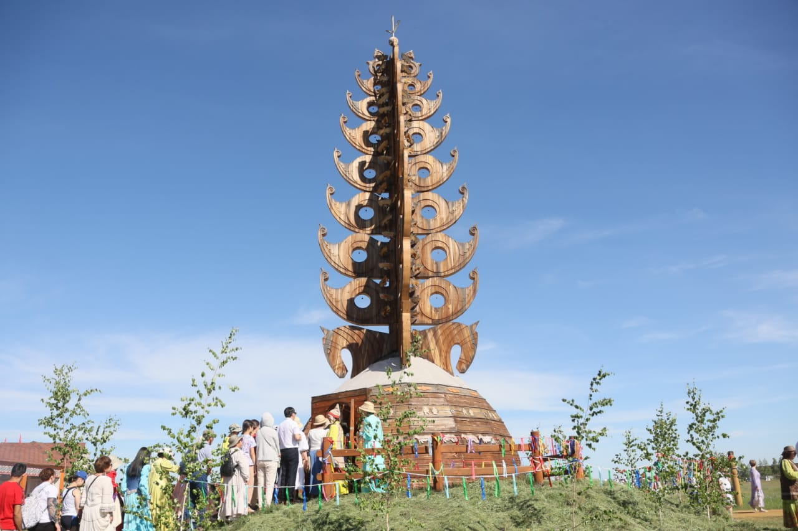
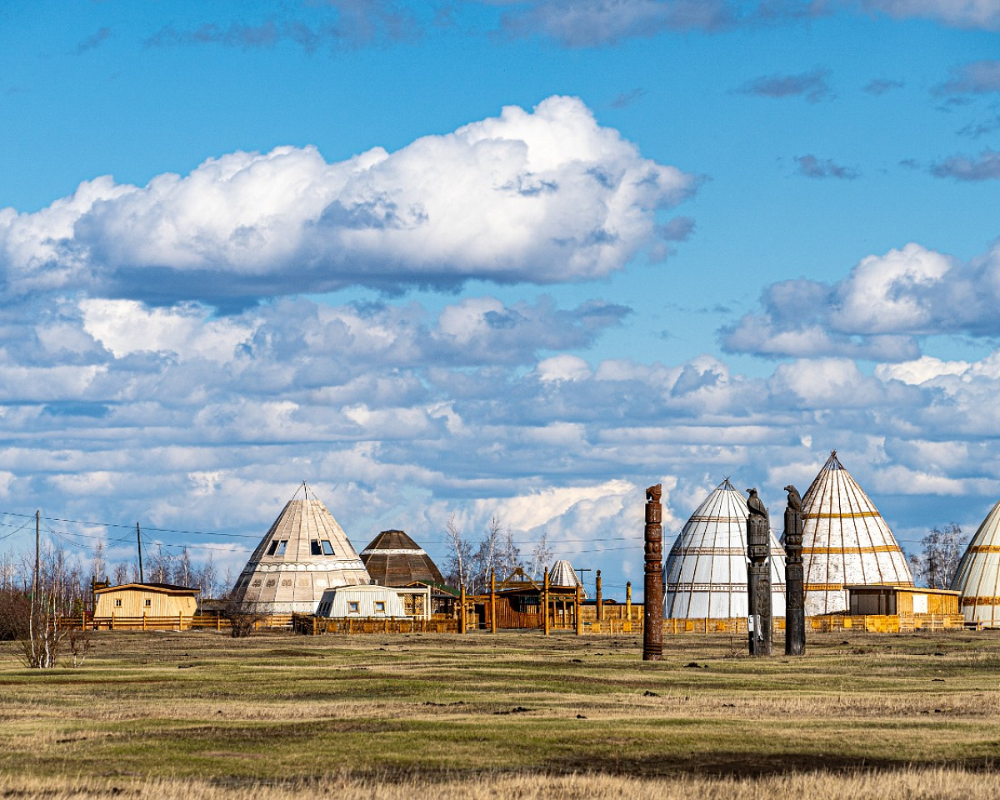
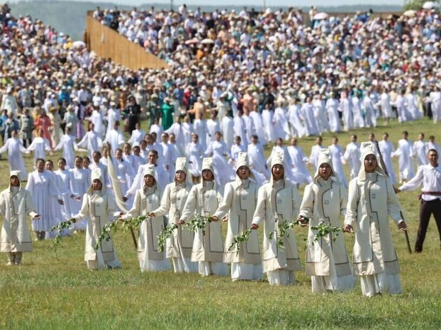
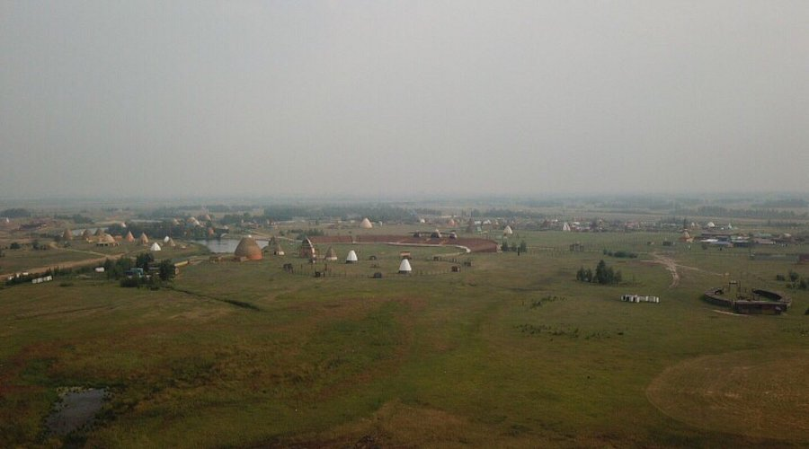
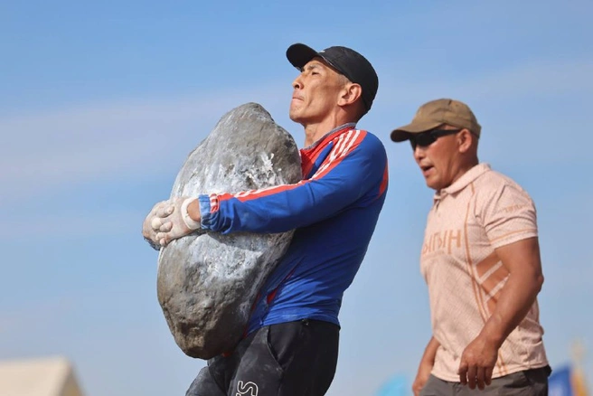
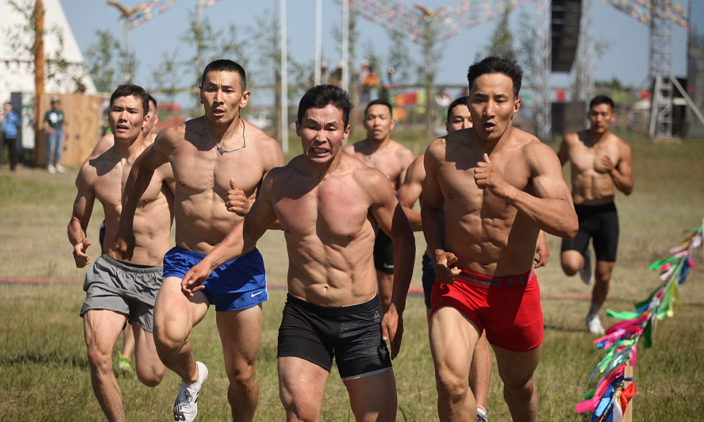
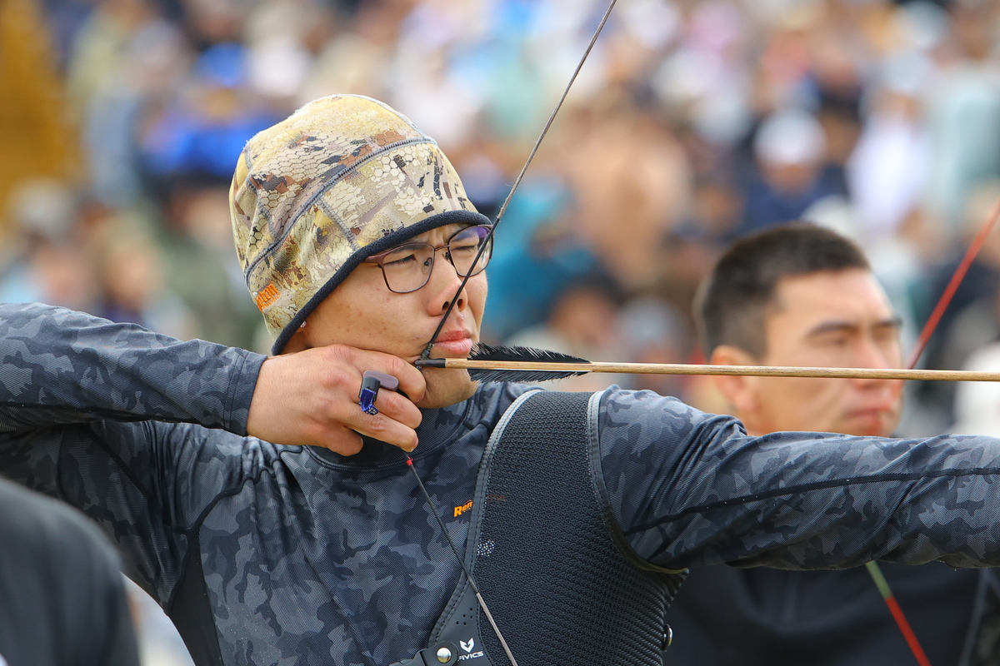
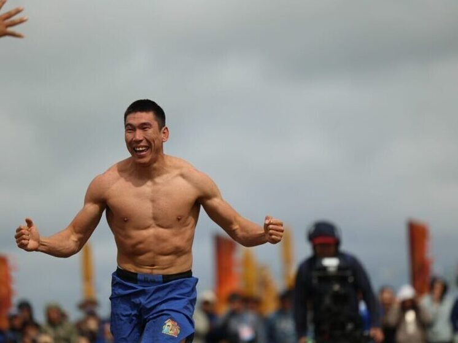
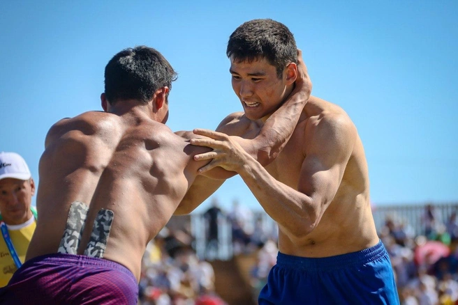
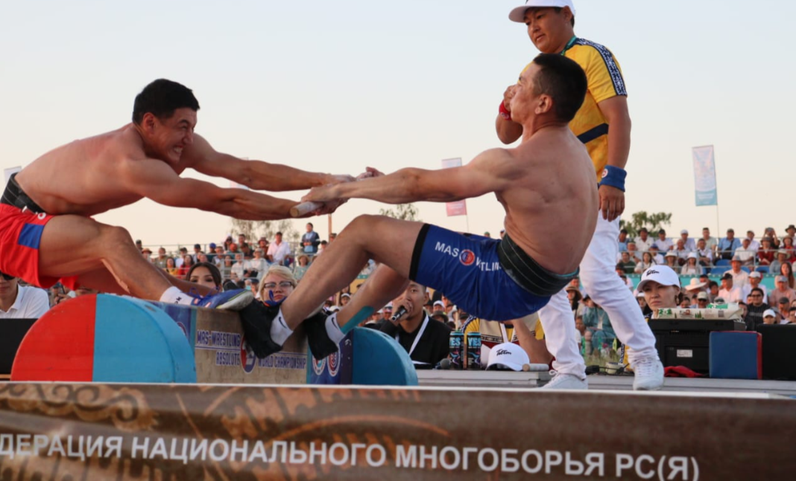

Ысыах Туймаады
Самый масштабный национальный праздник в Республике, который ежегодно проходит в столице Якутии.
Дата проведения: 27–28 июня 2026 года (суббота и воскресенье).Место проведения: Архитектурно-этнографический комплекс «Ус Хатын» (в 20 км от Якутска).
Тематика года: Фестиваль приурочен к Году единства народов и к Году культуры.
Медиа Ус хатын




Дыгын оонньуута
«Игры Дыгына» — это престижный чемпионат по национальному многоборью среди сильнейших боотуров Якутии, который считается главным спортивным событием фестиваля «Ысыах Туймаады».
Финальный этап соревнований пройдет 27–28 июня 2026 года на спортивной арене Ус хатын.
В финале выступят 16 сильнейших спортсменов, прошедших улусный отбор.
Главный приз 2026 года
Однокомнатная квартира в новом жилом комплексе Якутска и 3 миллиона рублей.
7 дисциплин многоборья
Үс төгүл үс - серия 11 прыжков разных видов.
Тутум эргэтиитэ - проверка гибкости и координации.
Мас-рестлинг - всемирно известное перетягивание палки.
Стрельба из лука.
Бег на 400 метров.
Хапсагай.
Таас көтөҕүү.
Действующий чемпион
Борис Сдвижков — действующий абсолютный чемпион «Игр Дыгына» (2025 год), вошедший в историю якутского спорта как один из самых волевых и стабильных многоборцев. За свою неизменную открытость и доброжелательность он получил от болельщиков народное прозвище «Мичээр Боотур».
Медиаархив Игр Дыгына 2025 года





